第三章 整式及其加减（高效培优单元测试·强化卷）
（考试时间：120分钟 试卷满分：120分）
一、选择题（本大题共10小题，每小题3分，共30分）
1．下列代数式中，① ；②
；② ；③
；③
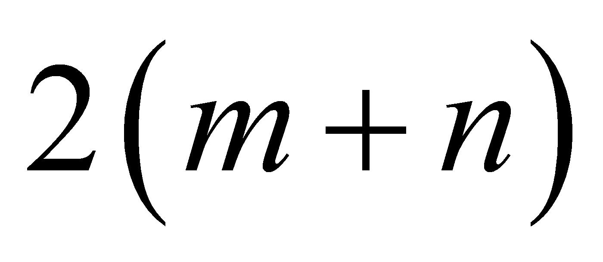
；④ 千米．符合代数式书写要求的有（ ）
千米．符合代数式书写要求的有（ ）A． 个 B．
个 B． 个 C．
个 C．
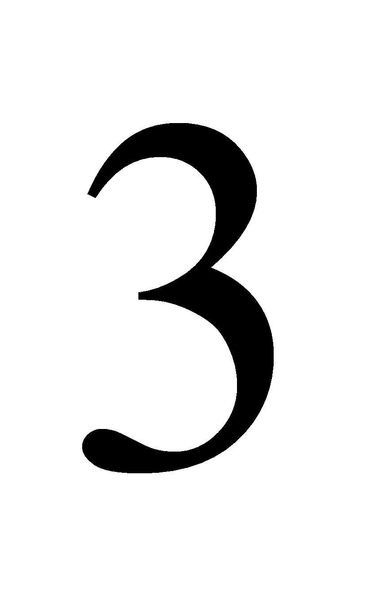
个 D． 个
个2．若
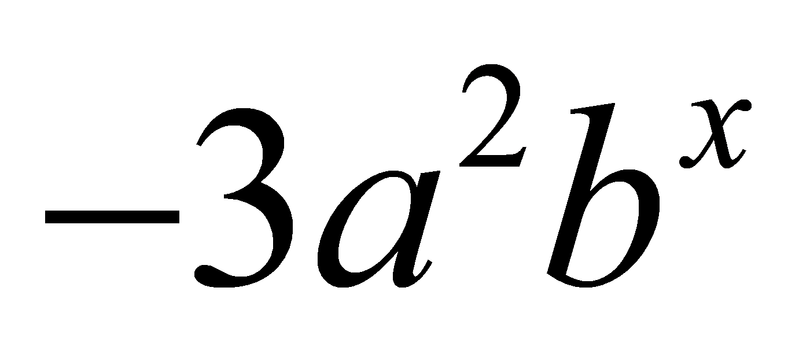
与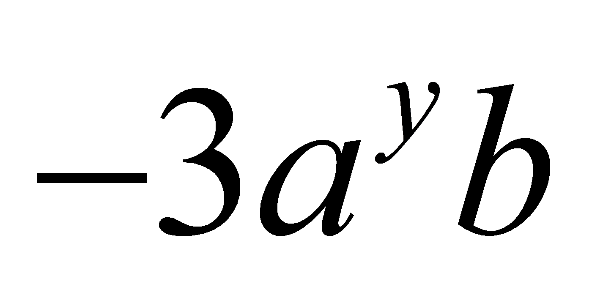
是同类项，则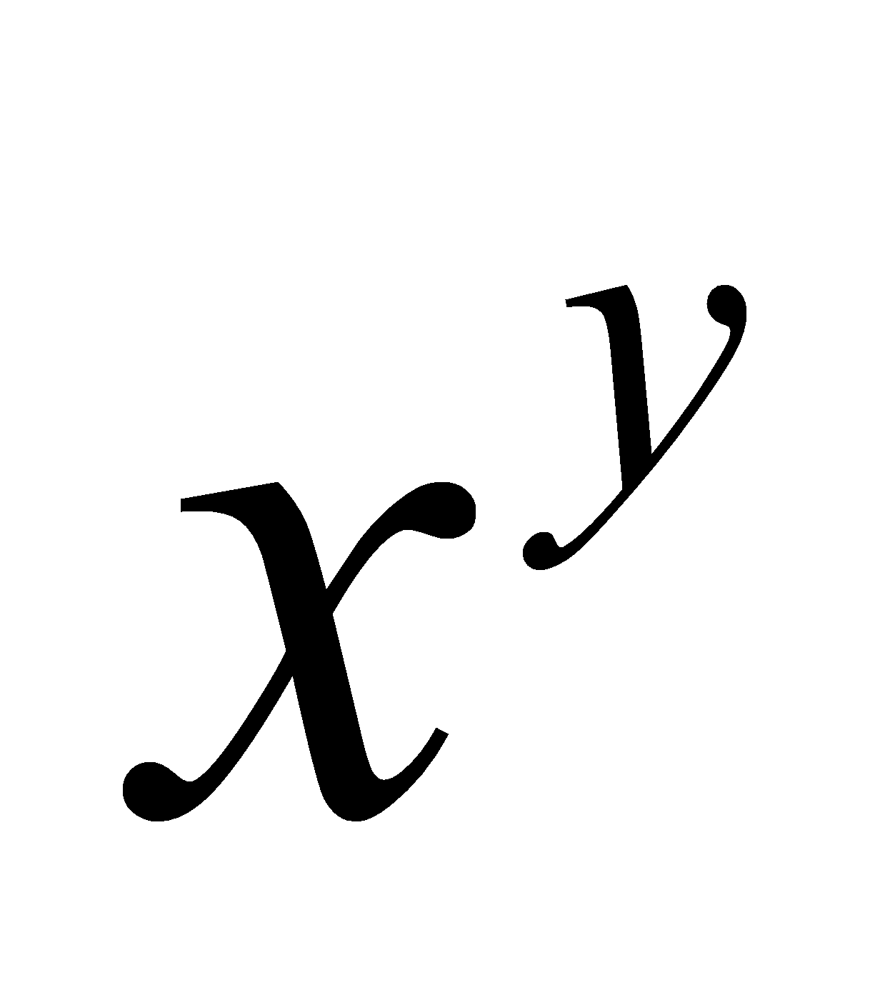
的值是（ ）A．1 B．2 C．3 D．4
3．下列计算正确的是（ ）
A． B．
B．
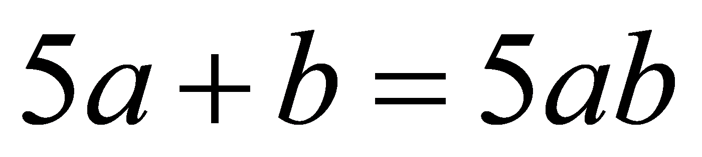
C． D．
D．
4．在代数式 中，整式的个数有（ ）
中，整式的个数有（ ）
A．3个 B．4个 C．5个 D．6个
5．下列说法正确的是（ ）
A．多项式 的二次项是
的二次项是
B．单项式
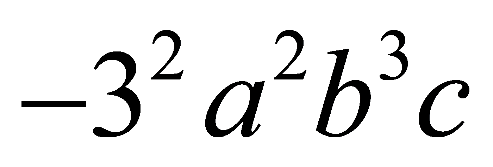
的次数是
C． 不是整式
不是整式
D．多项式
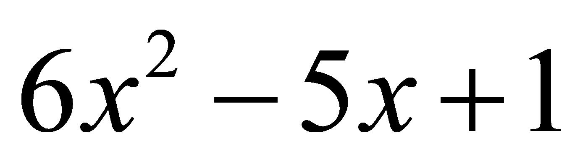
是三次三项式6．已知a，b为有理数，且 ，则
，则 的值为（ ）
的值为（ ）
A．4 B． C．16 D．
C．16 D．
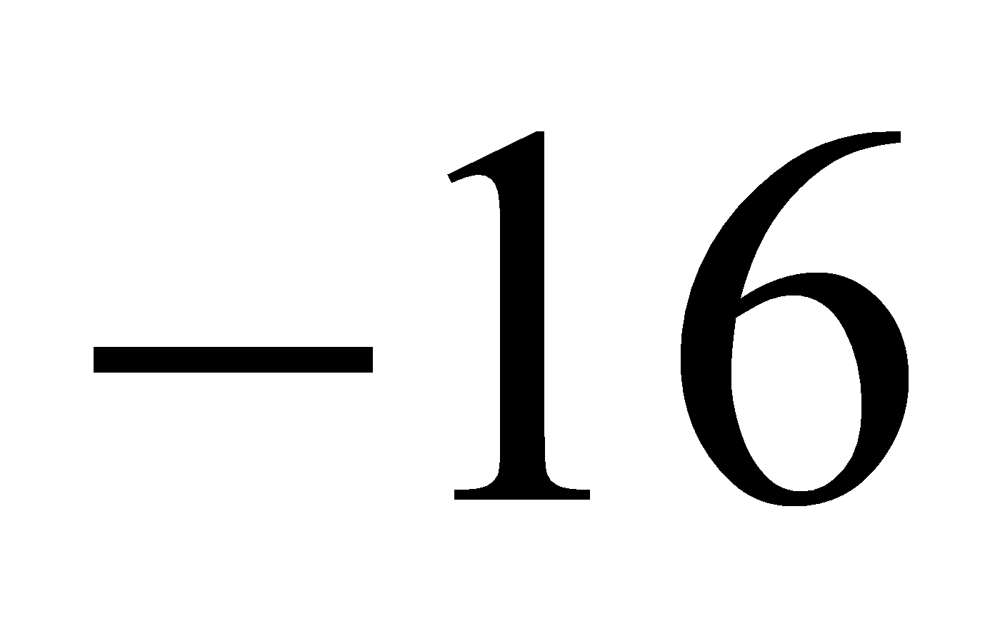
7．按照一定规律排列的式子： ，
， ，
，
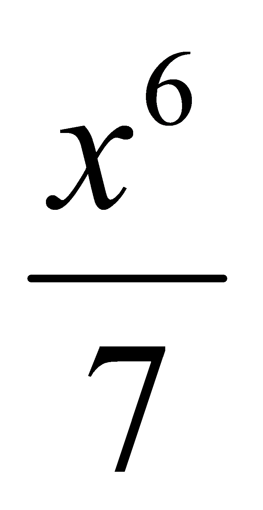
， ……，第
……，第 个式子是（ ）
个式子是（ ）A． B．
B． C．
C． D．
D．
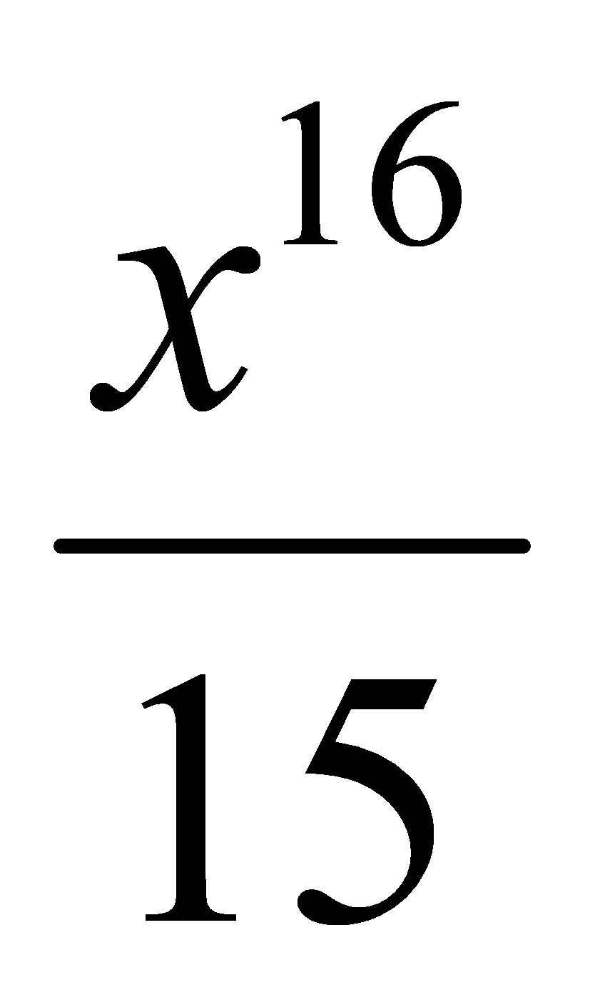
8．若
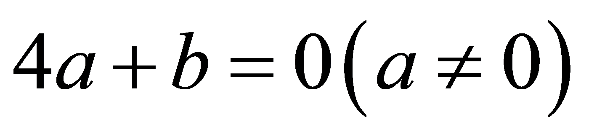
，则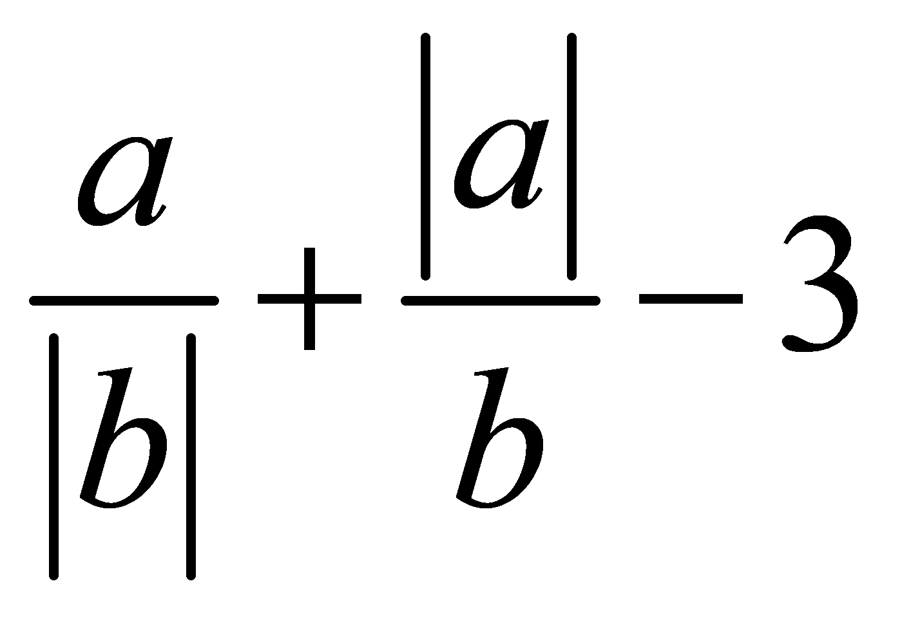
的值为（ ）A． 或
或 B． C．
B． C． 或0 D．
或0 D．
9．嘉嘉和淇淇对5个正整数进行规律探究，嘉嘉写出三个连续偶数： ，淇祺写出两个连续奇数：
，淇祺写出两个连续奇数： ，若
，若 ，则
，则 的值一定能（ ）
的值一定能（ ）
A．被6整除 B．被7整除 C．被8整除 D．被9整除
10．我国春秋时期的《大戴礼》，记载了世界上最早的“幻方”如图（1），该幻方中每个三角形的三个顶点上的数字之和都与中间正方形四个顶点上的数字之和相等．现有如图（2）所示的“幻方”，其中正方形顶点上有两个数 和2，则
和2，则 与
与 的乘积为（ ）
的乘积为（ ）
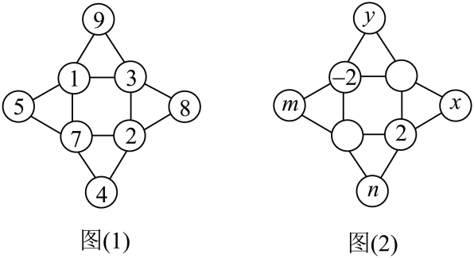
A．4 B．16 C． D．
二、填空题（本大题共6小题，每小题3分，共18分）
11．单项式 的系数是 ．
的系数是 ．
12．列式表示“x的3倍与y的4倍的和”为 ．
13．将多项式
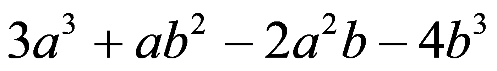
按字母 进行降幂排列：
进行降幂排列： 14．如果多项式 与多项式
与多项式 的差不含二次项，那么常数
的差不含二次项，那么常数 ．
．
15．某同学在做一个整式加上 时，把加上误看成了减去，结果做出的答案是
时，把加上误看成了减去，结果做出的答案是 ，那么正确的答案是 ．
，那么正确的答案是 ．
16．有理数 和在数轴上所对应的点如图所示，化简
和在数轴上所对应的点如图所示，化简 的结果为
的结果为

三、解答题（第17，18，19，20题，每题6分；第21，22，23题，每题8分；第24，25题，每题12分；共9小题，共72分）
17．计算
(1)
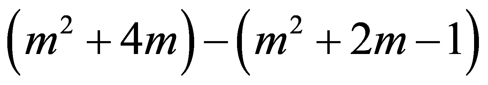
(2)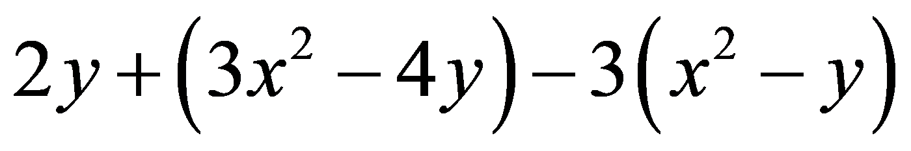
18．先化简，再求值：
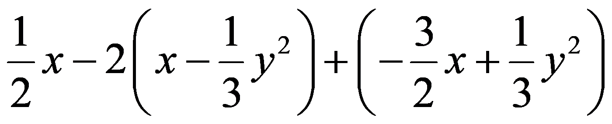
，其中 ，
， ．
．19．若a、b互为相反数，c、d互为倒数，m的绝对值等于3，n是单项式 的系数．
的系数．
(1)填空： _____，
_____，
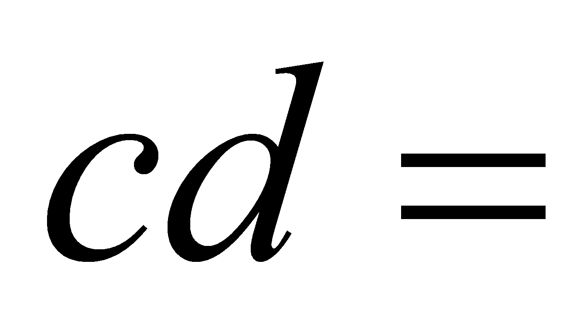
_____，______， ______；
______；(2)求 的值．
的值．
20．如图，这是一个数值运算程序：
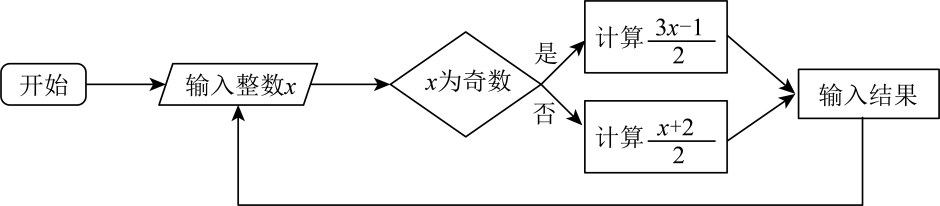
(1)若输入的 是，经历程序运算2次，求第2次输出的结果．
是，经历程序运算2次，求第2次输出的结果．
(2)若输入的是 ，经历程序运算2025次，求第2025次输出的结果．
，经历程序运算2025次，求第2025次输出的结果．
21．某商场销售一款运动鞋和运动袜，运动鞋每双定价180元，运动袜每双定价30元，商场决定开展促销活动，活动期间向客户提供两种优惠方案．（客户选择一种方案购买）
 方案：买一双运动鞋送一双运动袜；
方案：买一双运动鞋送一双运动袜；
 方案：运动鞋和运动袜都按定价的
方案：运动鞋和运动袜都按定价的 付款．
付款．
现某客户要到该商场购买运动鞋6双和运动袜双
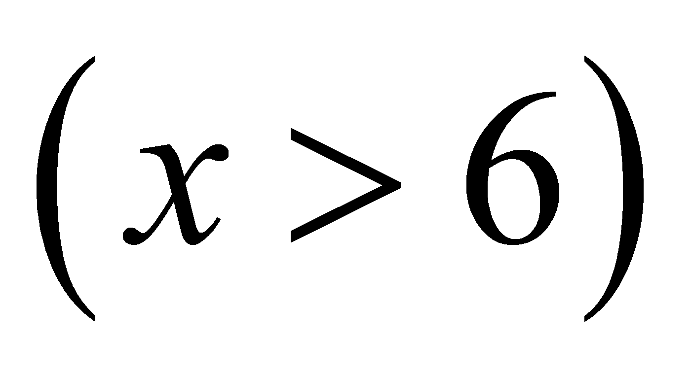
．(1)若按方案购买，需付款___________元，若按方案购买，需付款___________元；
(2)当 时，通过计算说明该客户选择哪种方案购买更省钱？
时，通过计算说明该客户选择哪种方案购买更省钱？
22．数学上，我们把 称作二阶行列式，规定它的运算法则为
称作二阶行列式，规定它的运算法则为 ，例：
，例：
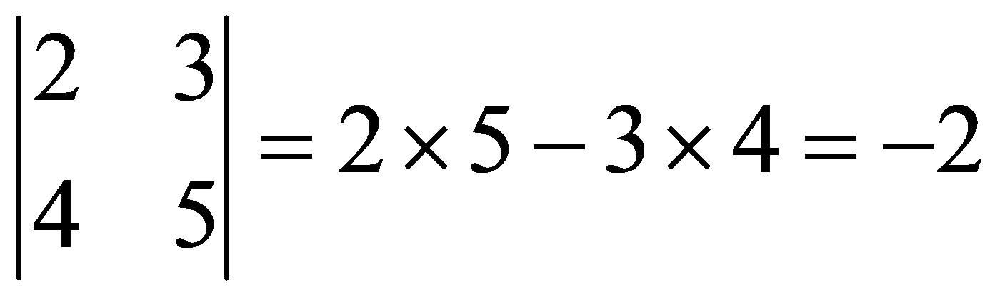
，请根据阅读理解上述材料解答下列各题：(1) ______；
______；
(2)计算： ；
；
(3)已知实数a，b满足行列式 ，求代数式
，求代数式 的值．
的值．
23．理解与思考：
整体代换是数学的一种思想方法．例如：已知
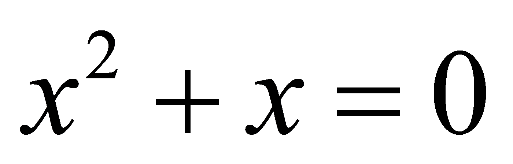
，求代数式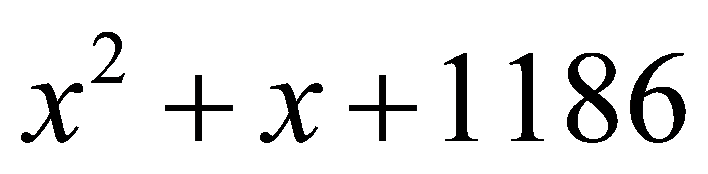
的值．我们将 作为一个整体代入，则原式
作为一个整体代入，则原式 ．
．仿照上面的解题方法，完成下面的问题：
(1)若 ，则
，则 ______；
______；
(2)如果 ，求
，求 的值；
的值；
(3)若 ，
， ，求
，求 的值．
的值．
24．定义：若 ，则称a与b是关于7的幸福数．
，则称a与b是关于7的幸福数．
(1)10与________是关于7的幸福数，
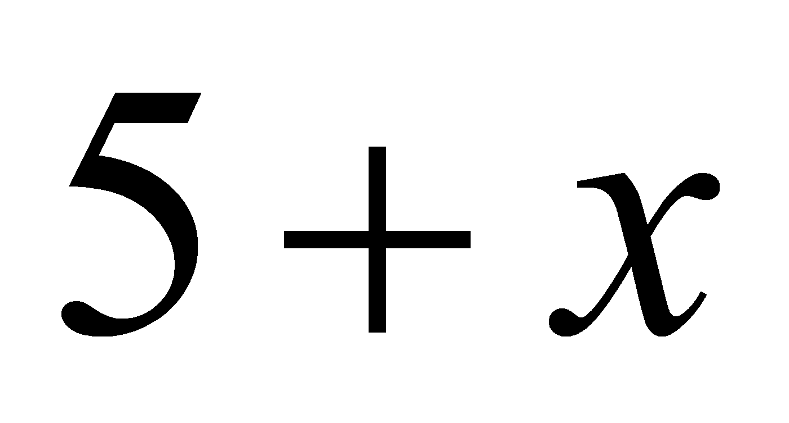
与________是关于7的幸福数．（填一个含x的代数式）(2)若
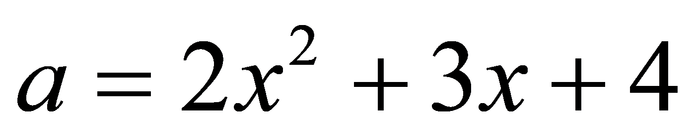
，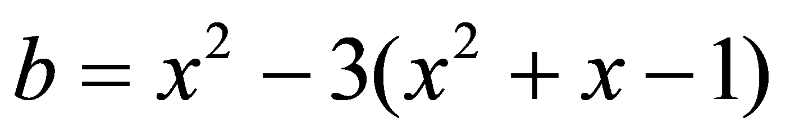
，判断a与b是否是关于7的幸福数，并说明理由．(3)若
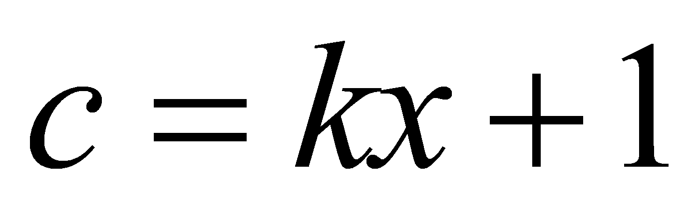
， ，且c与d是关于7的幸福数，若x为正整数，求非负整数k的值．
，且c与d是关于7的幸福数，若x为正整数，求非负整数k的值．25．有这样一道题：关于x的多项式 与
与
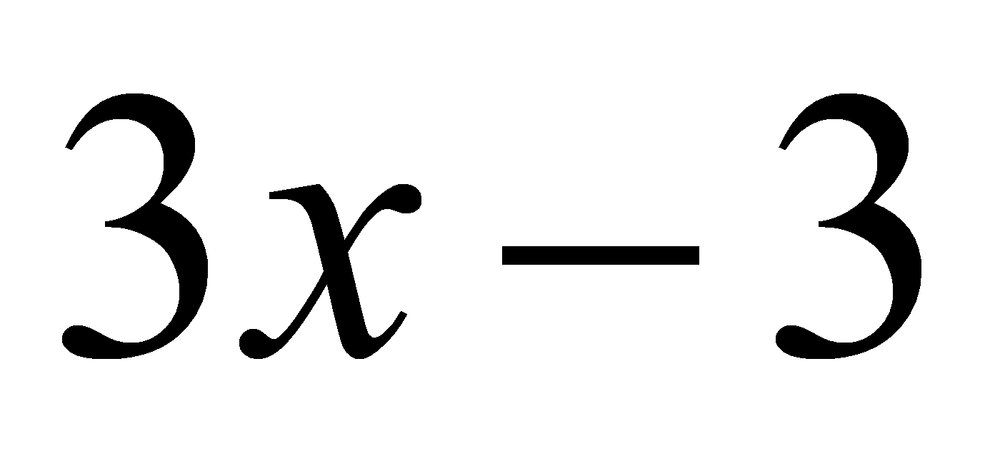
的和的值与字母x的取值无关，求a的值．通常的解题方法是：两式相加后，把x看作字母，a看作系数合并同类项，因为代数式的值与x的取值无关，所以含x项的系数为0，即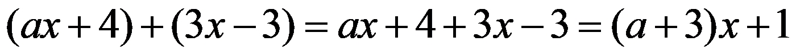
，所以 ，则
，则 ．
．【初步尝试】
（1）若关于x的多项式
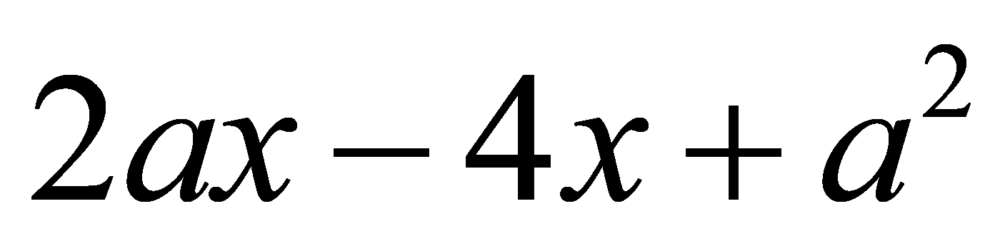
的值与x无关，求a的值．【深入探究】
（2）7张如图1的小长方形，长为n，宽为m，按照图2方式不重叠地放在大长方形 内，大长方形中未被覆盖的两个部分（图中阴影部分），设右上角的面积为
内，大长方形中未被覆盖的两个部分（图中阴影部分），设右上角的面积为 ，左下角的面积为
，左下角的面积为 ．
．
①若
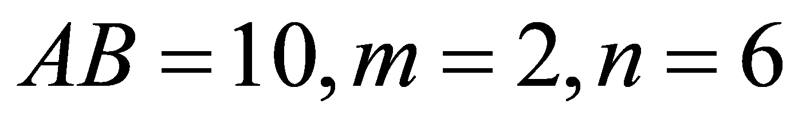
，求 的值．
的值．②当 的长变化时，的值始终保持不变，求m与n的等量关系．
的长变化时，的值始终保持不变，求m与n的等量关系．